Potential Outcomes
A brief introduction
University of Cambridge
Causation
Social scientists are usually interested in causal relationships1
- Why does \(Y\) happen?
- What did \(X\) do?
- How do we change \(Z\)?
- Does \(X\) cause \(Y\)?
Causal inference is about answering these questions
Counterfactual causality
\(X\) causes \(Y\) if changing only \(X\) would change \(Y\)
This is quite broad:
- \(X\) need not be the only cause of \(Y\)
- \(X\) may cause \(Y\) for multiple reasons
- \(X\) may cause \(Y\) only under certain conditions
All that matters for the relationship to be causal is that if the distribution of \(X\) was different, it would result in a different distribution of \(Y\)
We’ll focus on two-valued \(X\): a binary treatment
Two worlds
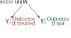The treatment effect
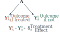Potential outcomes
We can define a causal effect—an estimand of interest—as the difference (\(\delta\)) between two worlds or potential outcomes:
\[\delta = Y^1 - Y^0\]
- \(Y^1\): The outcome if treated
- \(Y^0\): The outcome if not treated
This raises a fundamental problem
World where A is treated
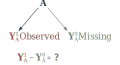World where A is untreated

The fundamental problem
We want to know the difference between the factual (what happened) and the counterfactual (what did not)
This is a missing data problem
Let us assume:
- Potential outcomes are fixed for each unit
- Potential outcomes vary across units
- Treatment determines which potential outcome is observed
We can estimate \(\delta\) if we can estimate the value of the unobserved outcome(s)
Causal inference is about estimating these counterfactuals we cannot see
An example
Clearing lots
What is the effect of clearing vacant lots on nearby violent crime?1
We can look at vacant lots and see what happens
But we only see one outcome per lot:
- If we clear a lot, we don’t see what happens if we had not
- If we don’t clear it, we don’t see what happens if we had
What could we do?
Between comparison
We could compare different lots:
- One cleared (\(T=1\))
- One not cleared (\(T=0\))
Use the difference (\(\delta\)) in observed crime as the causal effect
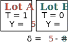
What if the difference is because the lots are different?
We could look at identical looking lots
But if those lots are identical, why did one get cleared and not the other?
We can’t be sure they’re similar without knowing why it got cleared
A substitution
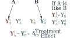Before and after comparison
Could compare the same lots:
- After clearing (\(T=1\))
- Before clearing (\(T=0\))
Use the before-and-after difference (\(\delta\)) as the causal effect
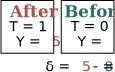
But what if the change was going to happen anyway?
Maybe the crime change even caused the clearing!
What if the lot was cleared because it would make a difference?
Maybe there would have been no difference in other lots!
Different potential outcomes
These are really the same problem:
Differences in potential outcomes between cleared and uncleared lots
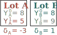
Put in two equivalent ways:
- The treatment effect is associated with the likelihood being treated
- Treated lots respond differently to treatment than untreated ones would
How do we make sure the cleared and uncleared lots are the same?
Randomization
We can do this with a randomized controlled trial:
- Take a relatively large number of lots
- Randomly pick some lots to clear
- Cleared and uncleared lots will have similar potential outcomes on average
The probability of being treated is now independent of the outcomes:
\[(Y^0,Y^1) \perp T \]
While all the units may have different potential outcomes, the outcomes will not differ systematically between treatment groups
This means, essentially, we can ignore the treatment assignment process
Ignorability enables substitution
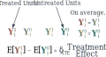Average treatment effects
If we randomly assign a treatment, we can estimate a causal effect as the average difference in outcomes between the treated units and the untreated units
This is the average treatment effect:
\[ATE = E[Y^1]-E[Y^0]\]
You can calculate this with a cross-tab1
But what if we’re interested in things we can’t randomly assign?
Back to counterfactuals
Causal inference hinges on substituting in plausible counterfactuals in place of the potential outcomes we never observe
Substituting in counterfactuals requires knowing why units got treated
This is the same as with randomization:
- With randomization, we know it happened randomly!
- Without randomization, we need to know the assignment process!
We can again achieve ignorability conditional on this information about treatment assignment
Conditional ignorability
Ignorability can be achieved if we know \(Z\), which is either (or both):
- What explains differences in potential outcomes between groups (outcomes)
- What explains which units get treated (propensities)
This requires an additional positivity assumption:
Every level of \(Z\) must have a non-zero probability of receiving every treatment
\[(Y^0,T^1) \perp T|Z,\;\; 0<Pr(T=t|Z)<1 \]
We can then calculate the conditional average treatment effect (CATE):
\[CATE=E(Y^1-Y^0|Z=z)\]
But there are some other concerns
The stable unit treatment value assumption
SUTVA
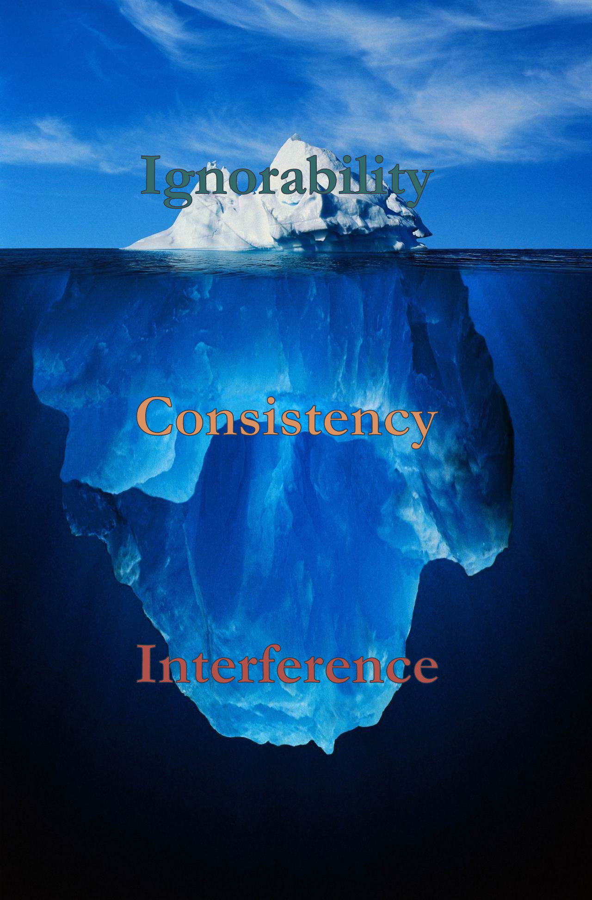
Must have well-defined potential outcomes
Consistency:
- No versions of treatment
- No compound treatments
No interference:
- A units’ potential outcomes do not depend on the treatment status of other units
Consistency: Multiple treatments
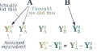Commonly violated in experiments and observational research
- Implementation differences
- Treatment infidelity
- Composite variables
- Asymmetries
Consistency: Asymmetry
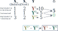Nearly all studies assume symmetry—but reality is often asymmetric
- Pulling a knife out doesn’t heal the wound
- Control conditions may be a treatment for some units
Interference: Contamination
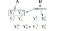Occurs when some units’ treatments affect other units’ treatments
These spillovers are common in theory and practice:
- Participants influence each other
- Micro-macro mechanisms: Norms, equilibriation
Interference: Exploding outcomes
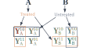Can often rule out in experiments, but…
- This eliminates important real mechanisms
- As a result experimental results rarely translate to large scale
oh no
These issues are:
- Exceedingly common in practice
- Sometimes, even often, fatal to identification
But if you’re aware, they can often be addressed with:
- Careful design
- Clever estimation
Handling issues
Consistency
Use realistic treatments
Pay attention to implementation
Measurement
- Be wary of composites
- Think carefully about time
- Record prior states
Model specification
- Estimate parameters for treatment types
- Test for asymmetries
Interference
- Design out spillovers
- …or design them in
- Measurement
- Norms and signals
- Proximity and contact
- Group presence and processes
- Model specification
- Spatial lags
- Network models
And it is okay to give up sometimes
Concluding thoughts
What is our counterfactual?
Causal inference hinges on having the right counterfactual
What if we don’t know what \(Y^{0}\) or \(Y^{1}\) we want?
- What really would have happened instead?
What if the \(Y_{t=0}^{0}\) we have is not similar to \(Y_{t=1}^{0}\)?
- Maybe no units are plausible substitutes?
Plausible counterfactuals come from theory and contextual knowledge
Complementary frameworks
Potential outcomes is compatible with and complementary to structural causal models, i.e., DAGs1
- Structural causal models useful for thinking about:
- Good and bad controls
- Conditional independence
- Potential outcomes useful for thinking about:
- Meaningful and plausible counterfactuals
- Identifying assumptions
Use both to inform your thinking
Takeaways
Know and state counterfactuals
- Counterfactuals are often unstated, sometimes implausible
- Counterfactuals come from area knowledge
Ignorability (i.e., non-spuriousness) is important but it isn’t everything
Consistency violations rarely considered
Interference is common and more than a nuisance
Be critical researchers, consumers, and reviewers
- But be kind too: It isn’t easy
Thank you
Contact:
Charles C. Lanfear
Institute of Criminology
University of Cambridge
cl948@cam.ac.uk